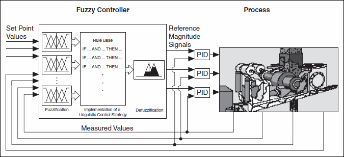
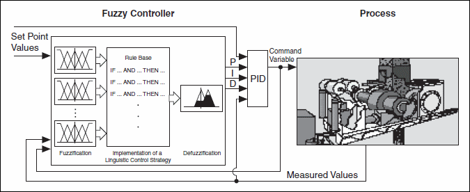
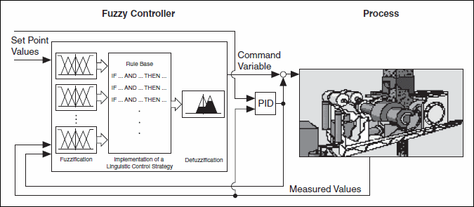

The chemical industries and process technologies often use fuzzy controllers with underlying PID control loops. The fuzzy controllers these industries use are PID fuzzy controllers that control single-process parameters. Usually, people supervise the operating point of the entire process.
The following image shows the controller structure of the fuzzy controller with underlying PID control loops.

For automatic operation of such multi-variable control problems, you must build a model-based controller. However, for most applications, either the process is too complex to model adequately, or the mathematical modeling task requires too much time.
The following image shows how to use a fuzzy controller to tune the parameters of a conventional PID controller automatically. This fuzzy controller constantly interprets the process reaction and calculates the optimal P, I, and D gains. You can apply this control structure to processes that change their characteristics over time.

In the following image, both the fuzzy controller and the PID controller work in parallel. The process adds the output signals from both controllers, but the output signal from the fuzzy controller is zero under normal operating conditions. The PID controller output leads the process. The fuzzy controller intervenes only when it detects abnormal operating conditions, such as strong disturbances.
